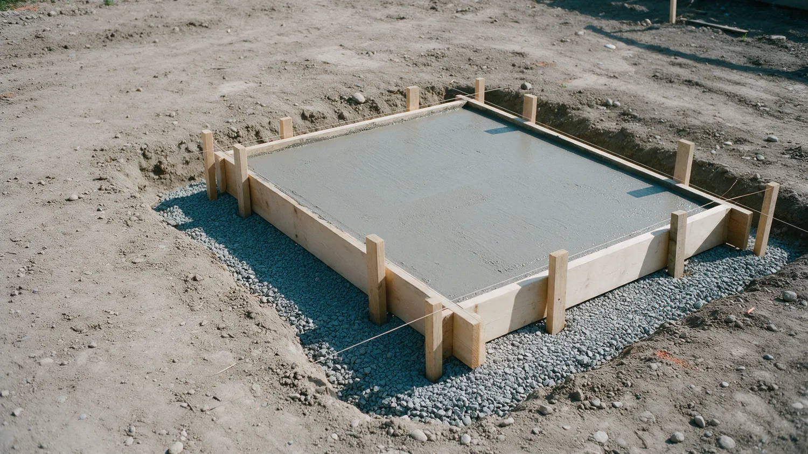
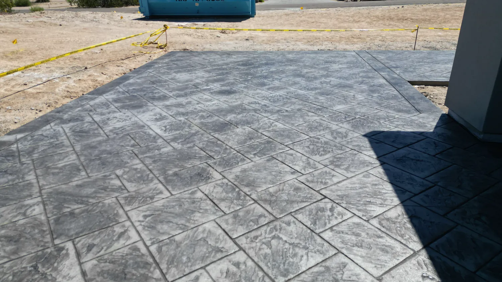
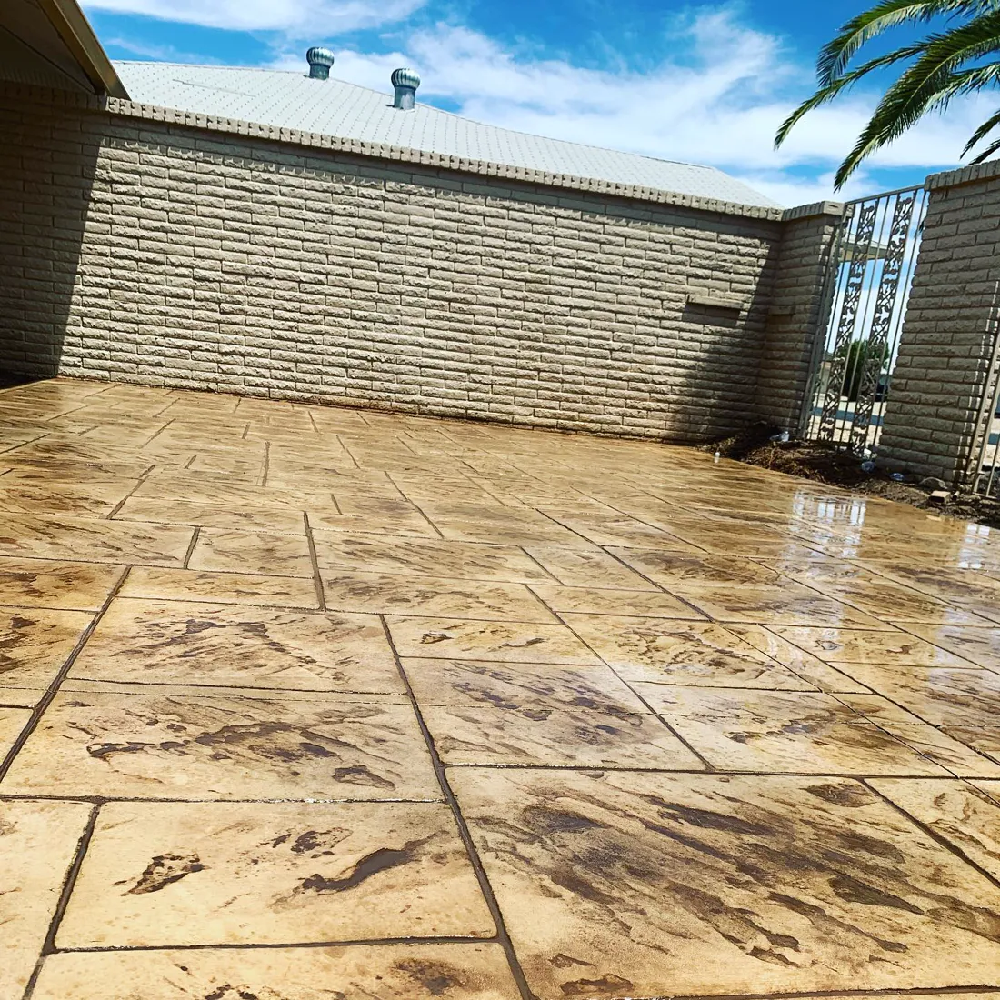
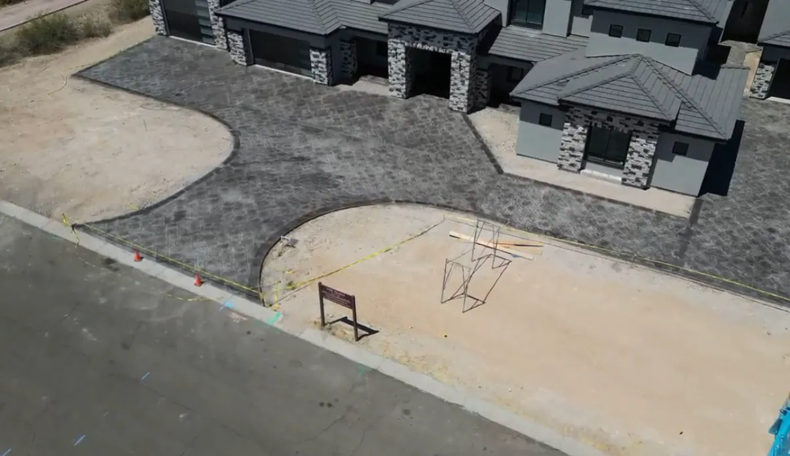
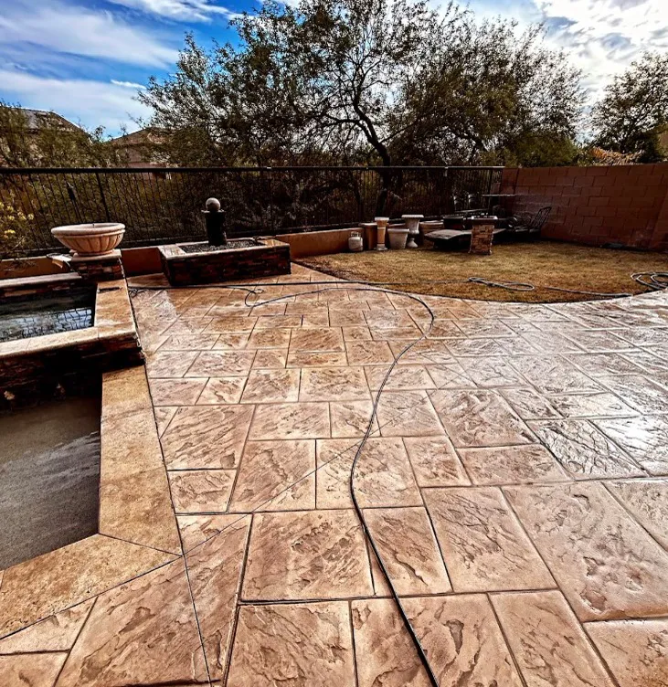

Concrete doesn't do second chances.
Family-owned concrete contractor with 20-plus years of experience, serving Phoenix, Mesa, Tempe, Peoria and Buckeye.
A truck of concrete gives you about ninety minutes.
Then it starts to set. No undo. No second pour.
Skip the prep, add a little water, rush the finish, and you'll see it in the cracks for years.
This is not a weekend project.


The rushed driveway
Water on the base, a hose in the form.
A wet, loose base settles. The slab on top of it follows.
Soupy mix, poured fast.
Extra water makes concrete easy to place and much weaker once it cures.
Then the cracks show up.
No steel, no planned joints, so the slab picks its own places to break.
And then comes the teardown bill.
Breaking out and re-pouring costs more than doing it right once.

Same driveway. Which crew do you want?


The right way
Same job. Done by pros.
- Compacted gravel base, graded to drain
- Rebar on chairs, so steel sits where it belongs
- Mix ordered for the job. No water added on site
- Placed, screeded and floated on schedule
- Joints cut and the slab cured, not left to chance
Poured right. On schedule.
- AZ ROC #338830
- 4.9 stars from 27 Google reviews
- Family owned
- 20+ years of experience
- Free in-person estimates
What we pour.
Decorative to structural, from one family-owned crew. Pick one to see how we do it.
Decorative concrete
Stamped, stained and colored concrete for driveways, patios, steps and pool areas.
See how we do itConcrete patios
Stamped, stained and colored patios built for backyard living in the heat.
See how we do itSlab foundations
Slab foundations for new homes, additions and commercial buildings across Arizona.
See how we do itRetaining walls
Practical and decorative retaining walls that hold soil, control runoff and level slopes.
See how we do itDriveways and walkways
Driveways and walkways in stamped, stained or colored finishes that handle heavy traffic and weather.
See how we do itDemolition and repours
Demolition of old concrete and a fresh pour in its place, handled by one crew.
See how we do itNot sure which one you need?
Our work.
A few recent pours. Ask us for more near you.






How we keep it honest.
Concrete is hard to judge until it's too late to change. So we put the important parts in front of you early.
-
A free in-person estimate.
We call you first, then visit the site to measure, talk through the job and design it if it needs one.
-
A clear schedule.
A deposit books your date, so you know when the crew is coming.
-
Licensed in Arizona.
AZ ROC #338830. You can look it up with the Registrar of Contractors anytime.
-
Start to finish.
Our team handles the project from the first stake to the last finishing pass.
Family owned. 20 plus years of concrete.
Arizona Premier Concrete is a full-service, family-owned concrete contractor in Phoenix. We have 20 plus years of experience across decorative concrete, patios, slab foundations, retaining walls, driveways and walkways, and demolition and repours.
Service, craftsmanship and responsive support come first. We visit the site, measure, design the job if it needs it, and our team handles the work from start to finish.
- License
- AZ ROC #338830
- Experience
- 20+ years
- Ownership
- Family owned
Where we work.
Serving the Phoenix valley and the towns around it.
- Phoenix
- Mesa
- Tempe
- Peoria
- Buckeye
Not on the list? Call. We also serve the areas around these cities, and we'll tell you straight whether we can take the job.
Call (602) 833-9502What customers say.
Hover a bubble to read it.Tap a bubble to read it.
4.9 average from 27 reviews. Read them on Google
Marcos provided the most detailed and honest pricing and his crew were prompt and delivered services on time. Our concrete pad was done to perfection and I also had them add some steps on our back patio.
When we first started the planning for our new house Marcos was the only contractor that would give me any information on pricing. 8 months later he stayed true to his pricing. Him and his crew did a great job on our foundation.
Fair pricing and they truly exceeded expectations. They finished earlier than promised and went above and beyond the agreed scope of work. My patio looks great!
I needed an additional driveway spot in an HOA. Marcus was professional and communicated well with all the right people and the work was top notch.
Great experience with Marco and his crew! We had a large concrete slab removed and they did an excellent job.
Marcos and his team are top notch! Amazing quality of work and the completed result was wonderful.
Booking is simple.
-
Contact us
Send the estimate form. We call to learn about your project and schedule an in-person estimate.
-
Consultation
We visit to measure, talk through the project and create a design if needed.
-
Deposit
A deposit gets you on the schedule.
-
Install
Our team handles the work from start to finish.
Questions we hear a lot.
How does an estimate work?
Send the form or call. We talk through the project, then visit the site to measure and discuss it. The estimate is free and in person.
How long until I can walk or drive on it?
Most slabs take foot traffic after about 24 to 48 hours. Cars and light trucks usually wait around seven days. Concrete keeps gaining strength for roughly 28 days, so we give you dates for your job.
Does Arizona heat affect when you pour?
Yes. In summer, concrete sets fast, so pours start early in the day and the crew is sized for the schedule. Fresh concrete also needs protecting from fast drying while it cures.
What about monsoon storms?
We watch the forecast. Rain on fresh concrete can damage the surface, so we move a pour when a storm is likely and plan drainage so water leaves your slab instead of sitting on it.
Do I need a permit or HOA approval?
Structural work like foundations and taller retaining walls usually needs a permit. Colors and patterns on visible areas often need HOA approval. Rules vary by city and community, so check early and we will help with what you need.
Which cities do you serve?
Phoenix, Mesa, Tempe, Peoria and Buckeye, plus the areas around them. Call if you are nearby and we will tell you if we can take the job.
Ready when you are.
Call us, or send the details and we'll call you to set up a free in-person estimate.